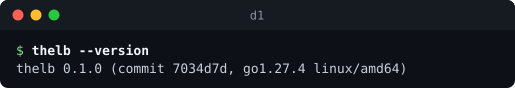

Get started
Install
theLB is one file. Download it, check it, and copy it to every machine that will be a director or a backend.
What you need#
- Linux. theLB is tested on Debian 13 (kernel 6.12) and aims to work on kernels from 5.14 (RHEL 9) on.
- Root on every machine. Every command except
--help,--versionandcompletionmust run as root (sudo). - Kernel modules. The kernel loads them by itself when they are installed:
- on directors:
ip_vsand its schedulers (ip_vs_wrrfor the default one); - on backends:
dummy, andnf_tableswith its NAT support; - on backends of tunnelled services:
ipip.
- on directors:
- One network for the directors. The directors must share a network (the same L2 segment), and the cluster's address - the control VIP - must be an unused address in it.
- Backends of normal (direct) services must be on the directors' network too. Backends of tunnelled services can be anywhere the directors can route to. See Direct routing and tunnels.
Which machines?
Most setups use three directors and as many backends as you like. A director's machine can be a backend too, for small setups - see A director's machine as a backend.
Open these in your firewalls#
| From | To | What |
|---|---|---|
| directors and backends | the control VIP and every director | the control port (TCP), 7443 in these docs |
| clients | the service VIPs | your services' ports |
| directors | backends | your applications' ports (the directors' health checks) |
| directors | backends of tunnelled services | IP protocol 4 (IP-in-IP) |
| directors | directors | multicast to 224.0.0.81, UDP port 8848 (connection sync) |
thelb doctor checks the firewall on a machine and prints the commands that open what is missing.
Keep the directors' network trusted
The kernel's connection-sync messages are not authenticated. A machine on the directors' network could add entries to their connection tables. Keep the directors on a network that only trusted machines share.
Download a release#
Each release has one binary for each processor:
| File | For |
|---|---|
thelb-0.1.0-alpha.3-linux-amd64 | 64-bit Intel and AMD |
thelb-0.1.0-alpha.3-linux-arm64 | 64-bit ARM (AWS Graviton, Ampere, Raspberry Pi 4 and 5 with a 64-bit OS) |
thelb-0.1.0-alpha.3-linux-arm | 32-bit ARM, ARMv7 and later (32-bit Raspberry Pi OS on a Pi 2, 3 or 4); not ARMv6 (Pi 1, Pi Zero) |
Next to each binary are its SHA-256 checksum (.sha256) and two software bills of materials (.cdx.json, CycloneDX, and .spdx.json, SPDX). SHA256SUMS lists the checksums of all three binaries.
Download, check and install - here for amd64:
curl -LO https://github.com/dmartsapp/thelb/releases/download/v0.1.0-alpha.3/thelb-0.1.0-alpha.3-linux-amd64
curl -LO https://github.com/dmartsapp/thelb/releases/download/v0.1.0-alpha.3/SHA256SUMS
sha256sum -c SHA256SUMS --ignore-missing
sudo install -m 0755 thelb-0.1.0-alpha.3-linux-amd64 /usr/local/bin/thelb
thelb --versionsha256sum must say OK. Then thelb --version shows the version, the commit it was built from, and the Go release:

As text
$ thelb --version
thelb 0.1.0 (commit 7034d7d, go1.27.4 linux/amd64)Copy the same file to every director and backend, as /usr/local/bin/thelb.
Check where it came from (optional)#
GitHub signs a statement for each binary, saying which workflow built it, from which commit. With the GitHub CLI:
gh attestation verify thelb-0.1.0-alpha.3-linux-amd64 --repo dmartsapp/thelb
gh attestation verify thelb-0.1.0-alpha.3-linux-amd64 --repo dmartsapp/thelb --predicate-type https://cyclonedx.org/bomThe first checks the build itself; the second checks that the CycloneDX SBOM describes this exact file. See Security for more.
Build it yourself#
You need Go 1.27.4 or later, and make:
git clone https://github.com/dmartsapp/thelb.git
cd thelb
make buildmake build puts bin/thelb.linux.amd64, bin/thelb.linux.arm and bin/thelb.linux.arm64 in bin/. You can build on any system - macOS too - but theLB itself runs only on Linux.
What gets installed#
Only the binary. theLB reads no configuration file: everything is a command-line flag, or the cluster's own state, which you change with thelb admin. The only files it ever writes are the two secret files, when the first director creates the cluster - see Secrets and approval.
Next: the quick start.